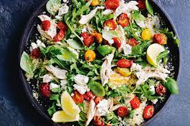

Spring Salad

People are surprised when they taste this salad with the odd combination of ingredients, but it's a very very good salad.
Ingredients
12 slices bacon
2 heads fresh broccoli, florets only
1 cup chopped celery
½ cup chopped green onions
1 cup seedless green grapes
1 cup seedless red grapes
½ cup raisins
½ cup blanched slivered almonds
1 cup mayonnaise
1 tablespoon white wine vinegar
¼ cup white sugar
Steps
Place bacon in a large, deep skillet. Cook over medium high heat until evenly brown. Drain, crumble and set aside.
In a large salad bowl, toss together the bacon, broccoli, celery, green onions, green grapes, red grapes, raisins and almonds.
Whisk together the mayonnaise, vinegar and sugar. Pour dressing over salad and toss to coat. Refrigerate until ready to serve.